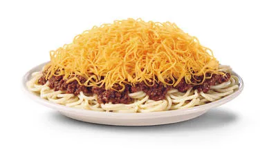
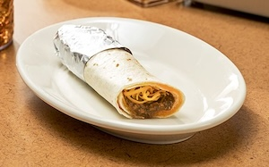

Here at Skyline Chili, there are so many amazing things on the menu, but there are 3 of the most popular items
Ways
Ways are one of our most popular itmes on the menu.There are different kinds of ways that you can order, however the most popular is a 3-way.

A 3-way is spaghetti, chili, and then our famous shredded cheese on top. From people not in the Cincinnati area this might sound gross, but it's actually delicious.
You can also get a 4-way, which is almost the same as the 3-way but before you add the cheese you can either add onions or beans. Then with a 5-way, you add onions and beans.
They might not sound great, but they really do hit the spot!
Coneys
One of our next most popular items on the menu are cheese coneys.
Cheese coneys are hot dogs in a bun, with chili, onions, mustard, and cheese. Just a perfect combo together.

The nice thing about cheese coneys, you can customize them all you want. You can get no onions, or no mustard, or if you aren't the bigest fan of cheese, light cheese or chili.
Along with cheese coneys, there are also chili cheese sandwhiches. These are the same things as cheese coneys just without the hot dog.
Chilitos
The last most popular food item are chilitos.

Chilitos are tortilla shells and you add chili and cheese to the inside and wrap them up. The same as the cheese coneys, they are very customizable. Many people like to add spaghetti and/or sour cream into their chilitos to give them a little
bit more flavor.